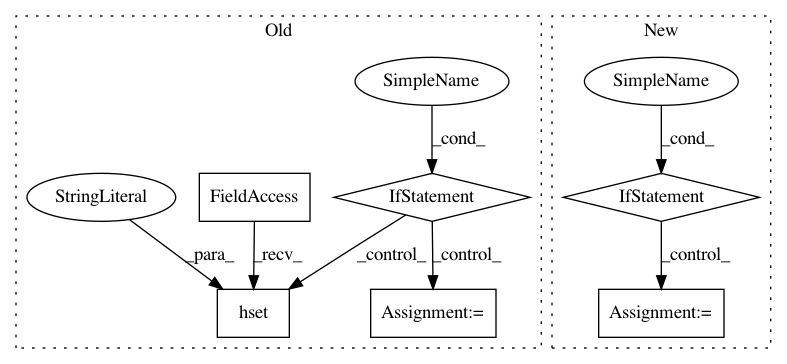

e621bae538b1f58a5a7a93ea8bf72bec21c6a726,slips/core/database.py,Database,setInfoForIPs,#Database#Any#Any#,907
Before Change
// THIS IS NOT WORKING CORRECTLY!!! FIX THE WAY WE STORE THE DATA, WE ARE NEVER STORING NOW
// Do we have any previous data?
if data:
// If there is data previously stored, check if we have this key already
try:
// If the key is already stored, do not modify it
value = data[key]
except KeyError:
data[key] = data_to_store
newdata_str = json.dumps(data)
self.r.hset("IPsInfo", ip, newdata_str)
else:
// There no data so far, so add the new data
// Create a temp dict to store the key and value
data[key] = data_to_store
newdata_str = json.dumps(data)
self.r.hset("IPsInfo", ip, newdata_str)
// disable, because gives an error of no attribute outputqueue
//print("\tNew Info added to IP {}: {}".format(ip, newdata_str))
// publish if the IP info was changed
if newdata_str is not None:
self.r.publish("ip_info_change", ip)
def subscribe(self, channel):
After Change
// Get the previous info already stored
data = self.getIPData(ip)
if not data:
// This IP is not in the dictionary, add it first:
self.setNewIP(ip)
// Now get the data, which should be empty, but just in case
data = self.getIPData(ip)
for key in iter(ipdata):
// print(f"Trying key {key}, for ip {ip}, with data {ipdata}")
// ipdata can be {"VirusTotal": [1,2,3,4], "Malicious": ""}
// ipdata can be {"VirusTotal": [1,2,3,4]}
In pattern: SUPERPATTERN
Frequency: 3
Non-data size: 6
Instances
Project Name: stratosphereips/StratosphereLinuxIPS
Commit Name: e621bae538b1f58a5a7a93ea8bf72bec21c6a726
Time: 2020-06-09
Author: eldraco@gmail.com
File Name: slips/core/database.py
Class Name: Database
Method Name: setInfoForIPs
Project Name: ray-project/ray
Commit Name: 5806e726f49885975d60bee9265371002b3ae24c
Time: 2021-04-05
Author: 74173148+iycheng@users.noreply.github.com
File Name: python/ray/experimental/internal_kv.py
Class Name:
Method Name: _internal_kv_put
Project Name: stratosphereips/StratosphereLinuxIPS
Commit Name: cd47df4b83023a3124ce72757a5e1df63585a2fa
Time: 2020-06-02
Author: eldraco@gmail.com
File Name: slips/core/database.py
Class Name: Database
Method Name: setInfoForIPs